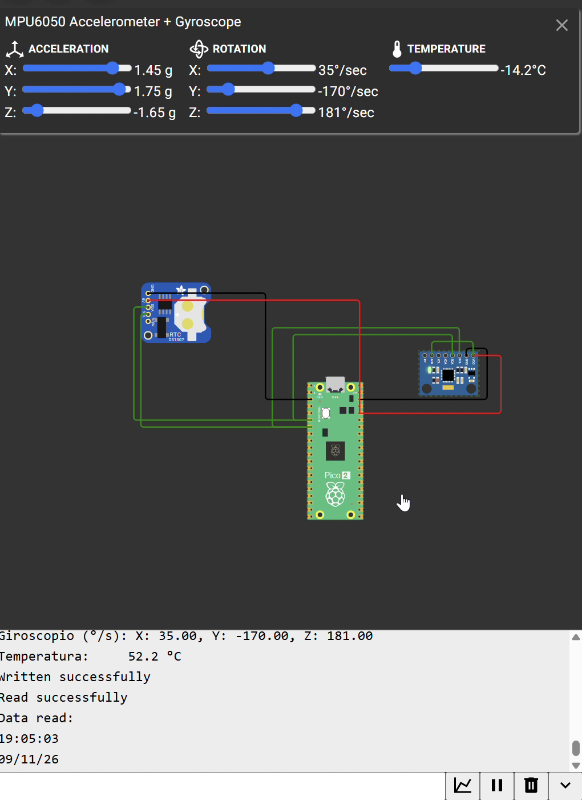

I2C
DS1307 RTC and MPU6050 Sharing One Bus (Wokwi)
Goal (one sentence): Use i2c0 on the Pico 2 as the only master of a bus shared by two slaves — a DS1307 real-time clock (time and date) and an MPU6050 (acceleration, angular rate and temperature) — reading each one with a register-pointer write followed by a repeated START and a read, and printing the values over USB serial.
Prediction
- Addresses: the DS1307 has a fixed 7-bit address
0x68, and the MPU6050 also answers at0x68when AD0 is low. With both on the same SDA/SCL the replies would collide, so I expect to need AD0 = 1 → MPU6050 at0x69. - DS1307: registers
0x00…0x06hold seconds, minutes, hours, day of week, date, month and year in BCD, so printing each byte with%02xshould already show the decimal digits (e.g.0x59→ "59"). With one print every 2 s, the seconds should advance in steps of 2 and roll over correctly into the next minute. - MPU6050: a single 14-byte burst from
0x3Breturnsax, ay, az, temp, gx, gy, gzas big-endian signed 16-bit values. With the default ranges:- acceleration:
a = raw / 16384g (±2 g) - angular rate:
ω = raw / 131°/s (±250 °/s) - temperature:
T = raw / 340 + 36.53°C
- acceleration:
- Negative readings should come out negative only if each pair of bytes is cast to
int16_tbefore converting; otherwise they would wrap to large positive numbers.
Setup
- Pin map: SDA = GP4, SCL = GP5 (
i2c0), shared by both modules. DS1307 →0x68; MPU6050 →0x69(AD0 tied to 3V3). - Both modules powered from the Pico's 3V3 and GND.
- Simulated in Wokwi:

- Non-default: none on the Pico side. Bus at 100 kHz (standard mode, the DS1307's maximum) with the RP2350 internal pull-ups instead of external resistors; MPU6050 left at its default ±2 g / ±250 °/s ranges; default 150 MHz
clk_sys.
What I did
- Connected SDA and SCL of both modules to GP4 and GP5 and tied the MPU6050's AD0 to 3V3 to move it to
0x69. - Initialized
i2c0at 100 kHz, set GP4/GP5 toGPIO_FUNC_I2Cand enabled their pull-ups. - RTC: wrote the register pointer
0x00withnostop = true(repeated START), read 7 bytes and printed time and date in hex, since the registers are already BCD. - MPU6050: same sequence from register
0x3B, read 14 bytes, joined each high/low pair into anint16_tand converted it to g, °/s and °C. - Ran the simulation, moved the MPU6050 sliders in Wokwi while the serial monitor was printing, and recorded it →
i2c_wokwi_demo.mp4(audio removed).
Evidence
| # | File | What it shows | Reading on the serial monitor |
|---|---|---|---|
| E1 | i2c_wokwi_demo.mp4 |
RTC output, one line every 2 s | 19:04:59 → 19:05:01 → 19:05:03 → 19:05:05, date 09/11/26 |
| E2 | i2c_wokwi_demo.mp4 |
First MPU6050 readings | ay = −1.40 g, gy = 152 °/s, gz = 19 °/s, T = 52.2 °C |
| E3 | i2c_wokwi_demo.mp4 |
MPU6050 after moving the sliders | ay = 1.75 g, az = −1.65 g, gy = −170 °/s, gz = 181 °/s, T = −14.2 °C |
Spot-check, working the formulas backwards to the raw register values: 52.2 °C → (52.2 − 36.53) · 340 ≈ 5328 and −14.2 °C → (−14.2 − 36.53) · 340 ≈ −17248; −1.40 g → −1.40 · 16384 ≈ −22938; −170 °/s → −170 · 131 = −22270. All of them fit inside a signed 16-bit range (±32767), and the negative ones only print as negative because of the int16_t cast ✔. The seconds in E1 move by exactly 2 per line and roll from 59 to 01 into the next minute ✔, and every line of E2/E3 shows both devices still answering on the shared bus.
What went wrong
- Two slaves at the same address: with AD0 left low, the MPU6050 also sat at
0x68, the same as the DS1307, so we couldn't tell which device was answering. Tying AD0 to 3V3 moved the MPU6050 to0x69and fixed it. - Wrong return codes in the MPU error message: the MPU6050 error check was copied from the RTC block and was still printing the RTC's return values. We changed it to use the MPU's own
i2c_write_blocking/i2c_read_blockingresults. It never showed up in the demo because in Wokwi both devices always acknowledged.
Code
Shared setup code (bus and addresses — both devices are read with the same pointer-write + repeated-START pattern):
#define I2C_PORT i2c0
#define SDA_PIN 4
#define SCL_PIN 5
#define DS1307_ADDR 0x68
#define MPU_ADDR 0x69 // AD0 = 3V3 (0x68 would collide with the DS1307)
i2c_init(I2C_PORT, 100 * 1000); // 100 kHz, standard mode
gpio_set_function(SDA_PIN, GPIO_FUNC_I2C);
gpio_set_function(SCL_PIN, GPIO_FUNC_I2C);
gpio_pull_up(SDA_PIN); // internal pull-ups instead of external resistors
gpio_pull_up(SCL_PIN);
DS1307 — 7 BCD registers from 0x00
uint8_t reg = 0x00, rtc[7];
i2c_write_blocking(I2C_PORT, DS1307_ADDR, ®, 1, true); // pointer -> 0x00, keep the bus (repeated START)
int r_rtc = i2c_read_blocking(I2C_PORT, DS1307_ADDR, rtc, 7, false);
if (r_rtc == 7) // BCD printed in hex = decimal digits
printf("RTC %02x:%02x:%02x %02x/%02x/%02x\n",
rtc[2], rtc[1], rtc[0] & 0x7F, rtc[4], rtc[5], rtc[6]);
MPU6050 — 14-byte burst from 0x3B
uint8_t mreg = 0x3B, d[14];
int w_mpu = i2c_write_blocking(I2C_PORT, MPU_ADDR, &mreg, 1, true);
int r_mpu = i2c_read_blocking(I2C_PORT, MPU_ADDR, d, 14, false);
if (w_mpu < 0 || r_mpu < 0) printf("MPU error: w=%d r=%d\n", w_mpu, r_mpu); // MPU's own codes
int16_t ay = (int16_t)(d[2] << 8 | d[3]); // cast keeps the sign
int16_t az = (int16_t)(d[4] << 8 | d[5]);
int16_t temp = (int16_t)(d[6] << 8 | d[7]);
int16_t gy = (int16_t)(d[10] << 8 | d[11]);
float ay_g = ay / 16384.0f; // ±2 g
float az_g = az / 16384.0f;
float t_c = temp / 340.0f + 36.53f; // datasheet formula
float gy_ds = gy / 131.0f; // ±250 °/s
sleep_ms(2000);
Open question
On a physical MPU6050 the chip starts in sleep mode, so does it return all zeros from 0x3B unless 0x00 is written to PWR_MGMT_1 (0x6B) first, even though Wokwi gave valid data without it? And does a brand-new DS1307 come with the clock-halt bit (bit 7 of the seconds register) set, so the time doesn't advance until it is cleared?